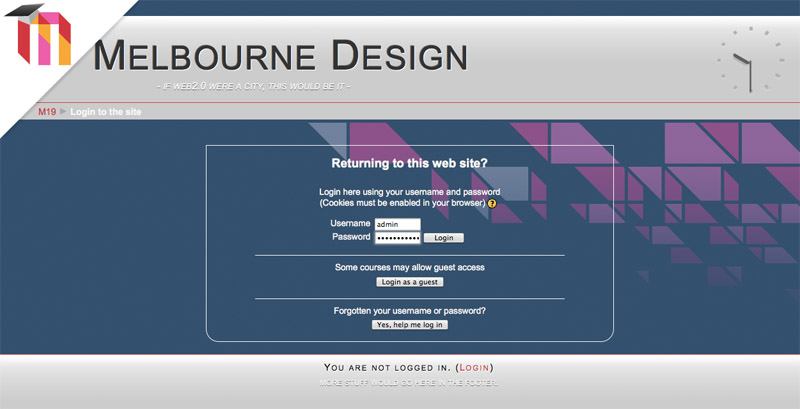

Moodle 1.9 Melbourne Theme
 Danny Wahl
•
•
Danny Wahl
•
•
While at the moodlemoot au 2010 this summer I was suffering from some severe jetlag. So, inspired by how intrinsically cool the city of Melbourne seemed to be – I set out on an all-night code sprint to whip up a theme in honor of the moot and the city. And Melbourne was born, it even got a brief, below-the-fold feature on MoodleNews.com. Shortly after I accidentally blew away the database that was hosting it (oops!) Well it’s back for good, right here, right now.


You can grab the theme from the Moodle Themes Database.
Support for the theme provided via Moodle Forums.